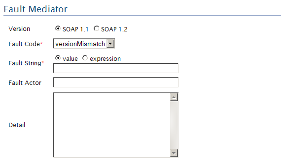
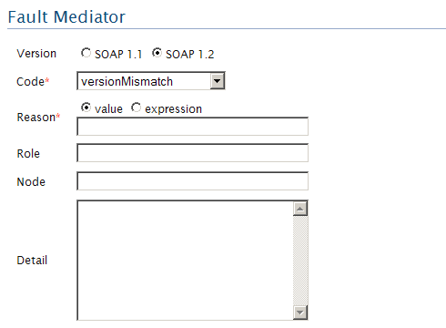

With the fault mediator, you can transform the current message into a fault message. But it does NOT send the message
Figure1: Fault Mediator
You can select the version of the SOAP fault message that you want to create. Options are SOAP 1.1 and SOAP 1.2.
You can specify a fault code
The detailed fault string of the fault code can specify here. It can be give either as a string value or as an expression. NSEditor: You can click this link to add namespaces if you are providing an expression. You will be provided another panel named 'Namespace Editor' where you can provide any number of namespace prefixes and url that you have used in the xpath expression. Here is an example of the use of namespaces in an expression.
SOAP 1.1 fault actor(if you select SOAP 1.1)
Figure2: SOAP 1.1 with fault expression selected
Some information about the fault can be added here
If you select SOAP 1.2, you can see the followings
Figure2: SOAP 1.2 with fault expression selected
Reason is the fault reason describing the fault code
SOAP 1.2 role names
SOAP 1.2 node name